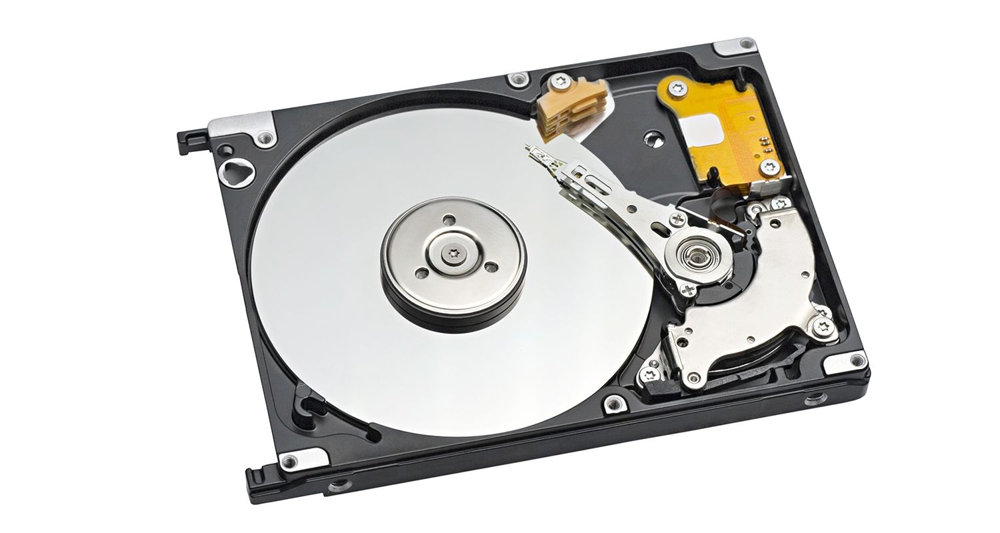
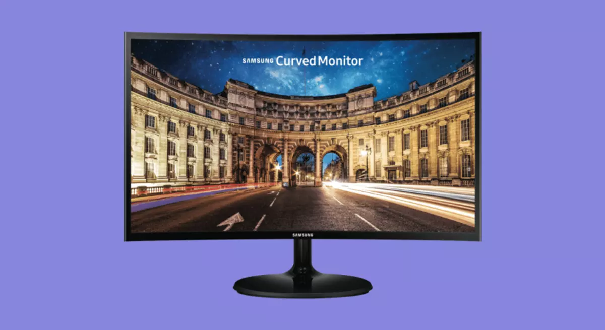

13 PRODUTOS DE INFORMÁTICA MAIS VENDIDOS
Hoje eu vou te apresentar uma lista com os 13 produtos de informática mais vendidos aqui pelo Brasil. Essa informação vai te dar uma ideia de que caminho prosseguir, principalmente se tem o interesse de atuar nesse mercado.
1. Roteador

Esse é um dos produtos de informática mais vendidos no Mercado Livre!
A procura por roteadores potentes cresce a cada dia mais porque esse aparelho ajuda que o sistema de internet da sua casa ou trabalho seja muito mais potente.
Ele é o responsável pelo alcance do seu sinal de Wi-fi e quanto melhor o aparelho, melhor o sinal. Só aqueles que as operadoras entreguem não são suficientes em áreas maiores.
2. Fone de ouvido

Os fones de ouvido mais procurados são os gamers. Nos últimos anos as pessoas têm investido bastante para ter uma máquina potente com acessórios que permitam a melhor experiência para jogos.
Existem fones com fio e sem fio, com microfone ou sem microfone. Além desses específicos, os fones menores sem fio também são bastante procurados e costumam sair bastante.
3. Impressora
A impressora também é bastante procurada!
O modelo que as pessoas costumam comprar mais são as que além de imprimir, conseguem tirar xerox e possuem a função scanner. Elas são ótimas para quem trabalha em home office ou estuda.
4. Disco Rígido Interno
O disco rígido é o responsável pelo armazenamento de dados de um computador/notebook. Muita gente acaba comprando um equipamento e com o uso percebe que precisa de mais espaço, o que as faz investir nisso.
Além de ter a possibilidade de trocar o disco rígido internamente, que armazena não só arquivos, mas dados, estruturas e softwares; ainda é possível usar o disco externo para armazenamento de arquivos pessoais. Ele vai funcionar quase como um pen drive, só que uma capacidade absurdamente maior.
5. Estabilizador
Se o seu objetivo é investir em produtos de informática para revenda, o estabilizador não pode faltar no seu negócio.
Ele é um equipamento de segurança que estabiliza, limpa e mantém a energia adequada do eletrônico.
Muito usado em computadores, mas também em outros produtos. Ele é relativamente barato e existem vários modelos no mercado para explorar.
6. Monitor
A aquisição de monitores maiores tem a ver com o segmento gamer, mas também com os profissionais que trabalham muito tempo na frente de telas. O que era um produto simples antes, hoje é cheio de tecnologia e vantagens.
Existem vários modelos e é interessante você já saber bem o perfil do seu público alvo antes de fechar parceria com alguma marca.
7. Notebook
Importante para estudo, trabalho e lazer, o notebook se tornou um artigo de necessidade no nosso dia a dia. Acho que por isso continua sendo um dos produtos de informática mais vendidos no Brasil.
Os mais comprados ainda são os considerados de estudo, talvez por conta dos valores, mas a busca por equipamentos de última geração também está se intensificando.
8. Tablet
Esse é outro queridinho da área de informática. Ele também é um ótimo companheiro para os estudos, mas vemos um uso constante e crescente entre crianças e adolescentes.
Acho que isso tem muito a ver por ser um produto relativamente mais barato que um computador ou celular de última geração e que acaba prendendo a atenção dos pequenos.
Não é à toa, por exemplo, que vídeos infantis no Youtube possuem milhões de visualizações e a cada dia que passa novos canais no segmento são criados.
9. Mesa digitalizadora
A mesa digitalizadora é uma espécie de prancheta conectada ao computador/notebook que vem com uma caneta. Com ela você pode escrever ou desenhar qualquer coisa que vai direto para o programa que preferir.
É um produto muito utilizado por designers gráficos, desenhistas, profissionais de lettering e até por arquitetos e decoradores.
10. Teclado e mouse
Além de existir a necessidade de troca por conta de quebra ou defeito, a procura por mouses e teclados mais confortáveis para trabalho e jogo aumentaram consideravelmente, principalmente depois do período que vivemos em quarentena por conta da pandemia do Covid-19.
A gente acabou percebendo algo que já era importante: Precisamos fazer atividades no computador/notebook com o máximo de conforto possível! Isso não só aumenta nossa produtividade como melhora a nossa saúde. Isso sem falar que existem esses acessórios voltados para o mundo gamer, que além de super confortáveis, costumam vir com luzes e estilos diferenciados.
11. Mochila para notebook
Parece simples, mas é um item que não pode faltar na lista de produtos de informática. É mais do que possível levar um notebook em uma mochila qualquer, mas se você tem um equipamento caro, vai querer transportá-lo com o maior cuidado e segurança do mundo, não é não?
Essas mochilas específicas, além de serem bonitas, costumam ter um acolchoado especial para que o seu notebook não arranhe ou tome pancadas.
Além disso, elas também costumam ter partes específicas para colocar outros acessórios que costumamos usar junto. Eu sou suspeita de falar porque gosto muito desse produto.
12. Leitor Kindle
Esse é um dos produtos que eu mais amo na vida, então falar dele para mim é muito fácil. O Kindle é o leitor digital da Amazon e é um dos mais conhecidos e usados no mundo todo.
Com ele você consegue ler livros, revistas, jornais e outros arquivos como se estivesse lendo de um papel. Ele tem um sistema de luzes diferenciado para que os nossos olhos não se cansem na leitura, sem falar que é super leve.
É uma ótima opção para quem gosta muito de ler ou para quem tem muito conteúdo de estudo ou trabalho. Com alguns cliques você consegue levar até milhares de livros na palma da mão. Ele já era bem procurado, mas eu acredito que a pandemia acabou nos trazendo de novo para leitura e ele veio com tudo!
13. Processador Gamer
O processador gamer dá condições de uma máquina rodar melhor um programa. Ele dá velocidade, memória e performance, o que influencia demais o desempenho de um jogo.
Muitas pessoas preferem criar o seu próprio computador para jogar ou outras só querem dar um up no que já possuem e investir nesse tipo de coisa ajuda muito!
Postagens recentes
TOP 10 MELHORES PROFISSÕES DE TECNOLOGIA PARA 2023
Você está em busca de um emprego ou recolocação profissional em 2023? A área de tecnologia da informação continua em alta, com muitas ofertas de vagas e bons salários.
Confira a seguir o top 10 melhores profissões de tecnologia para 2023.
Leia maisGESTÃO DO TEMPO E TECNOLOGIA
Tempo é o nosso recurso mais precioso, entretanto, é comum estarmos atolados pelo excesso de demandas e informações provenientes de emails, mensagens, notícias, entre outros canais.
Achar um equilíbrio para uma melhor produtividade se torna importantíssimo. Uma forma de equalizar isso é buscar uma gestão do tempo utilizando de recursos tecnológicos.
Leia mais